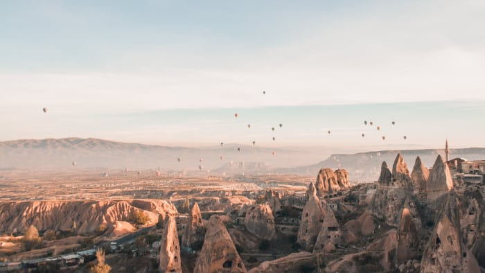
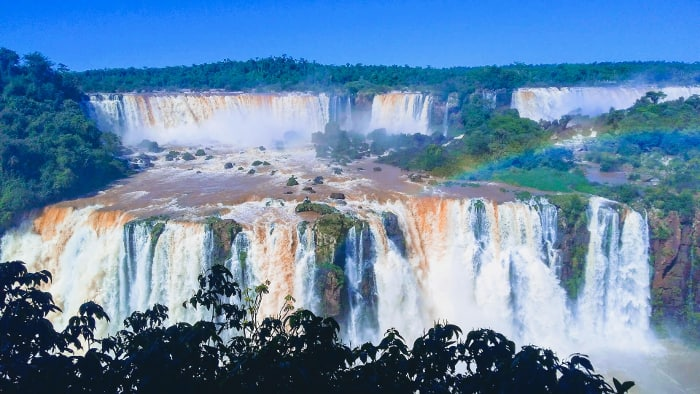
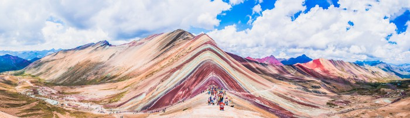

El Salar de Uyuni

Pamukkale

El Parque Nacional de Banff

La Polinesia Francesa

La Capadocia

Las Cataratas de Iguazú

La Montaña de Colores en Perú

La Puerta del Infierno en Turkmenistán
La Avenida de Baobabs en Madagascar